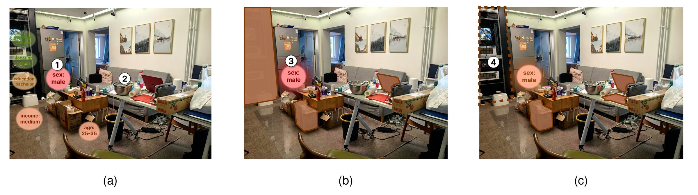
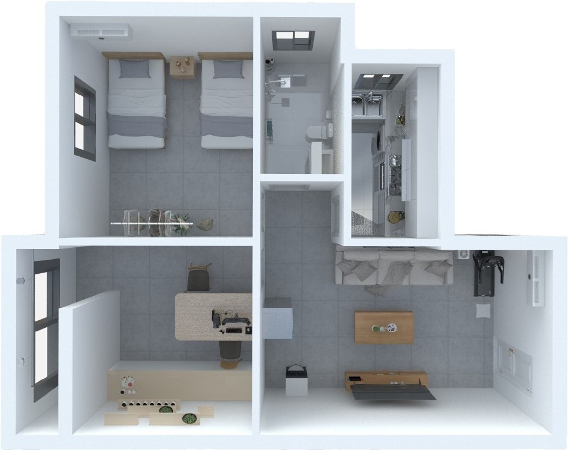
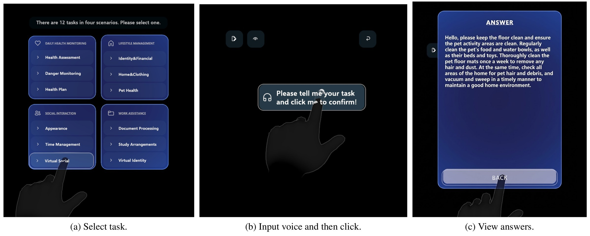
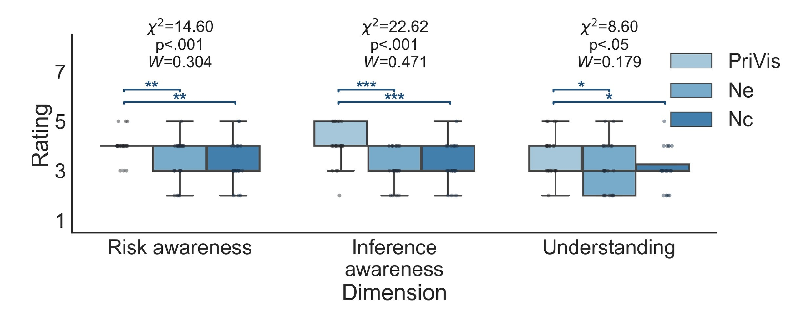
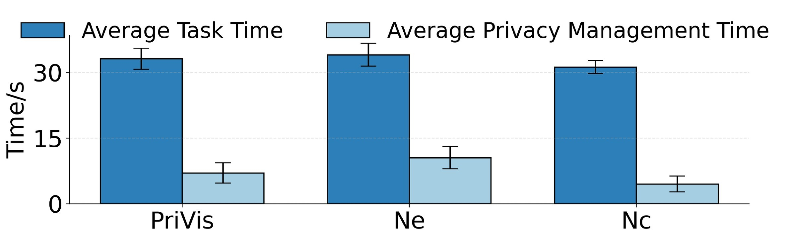
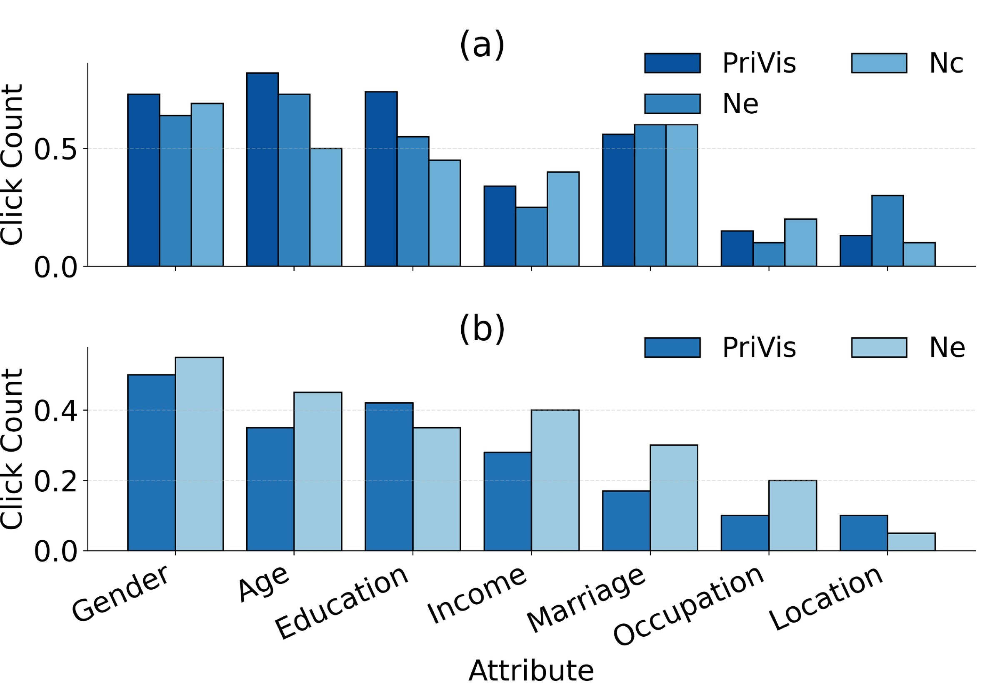
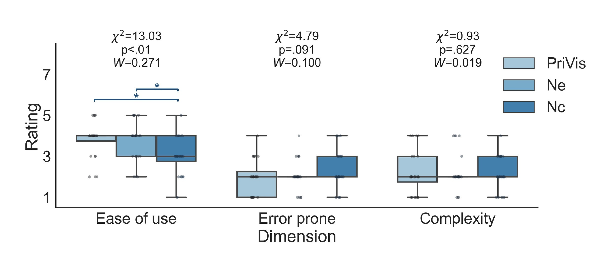
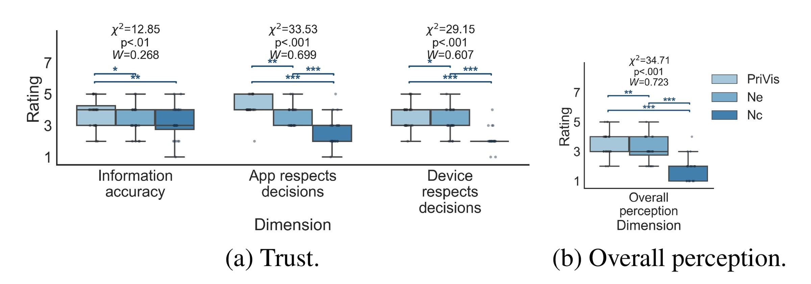
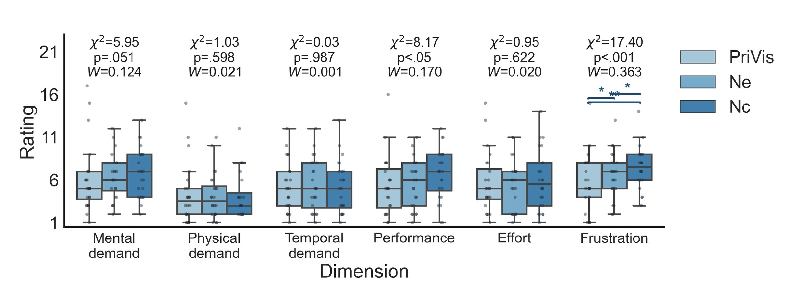

Distribution
The attacker publishes an app through the official AR glasses marketplace like anyone else, and it asks for camera permission like anyone else.
AI-powered AR glasses stream what you see to a vision-language model, which can read sensitive attributes out of ordinary objects, and never tells you. PriVis makes those inferences visible as they happen, shows which objects produced them, and lets you switch individual objects off.

A camera you know about is not the same as a camera you understand.
People wearing AR glasses know they are being filmed. What they do not know is that a vision-language model can read a prescription bottle as a medical condition, a set of children’s toys as family composition, or a stack of delivery boxes as an income bracket, and that this reasoning is invisible to them. Prior work has visualised direct intrusions and demonstrated that inference attacks are possible, but has not given the wearer real-time awareness of what is being inferred, from which objects, inside a continuous egocentric stream.
PriVis is a technique for closing that gap: a reasoning module that names the inferred attribute, its confidence and its evidence, and a visualisation module that places all of it in the field of view without taking the field of view over.
01 / Background
A traditional camera captures visual data as discrete instances. AI-powered AR glasses process a continuous stream of the wearer’s environment, which lets a vision-language model derive sensitive personal attributes from explicitly private content and from seemingly innocuous contextual cues alike.
A prescription bottle left on a table
A medical condition Health status
A set of children’s toys on the floor
A household with young children Family composition
A stack of delivery boxes by the door
A spending bracket Income
None of these objects is private on its own. The attribute is produced by the model reasoning across them, and that reasoning is the part the wearer cannot see. People know they are being filmed. They do not know what is being inferred, from which objects, or for what purpose.
Research on wearable and smart-home privacy has visualised direct intrusions, demonstrated that inference attacks are possible, and flagged text-based disclosure risks. What none of it provides is real-time awareness of an inferred threat while it is happening.
That gap is specific to this device. The warning has to arrive inside a continuous egocentric stream, while the wearer is doing something else, and within the attention a pair of glasses can reasonably ask for.
Research questions
How can we design a technique on AI-powered AR glasses to visualise inferred privacy and increase users’ awareness?
How do users perceive and interact with a technique that enables real-time visualisation and control of inferred privacy on AI-powered AR glasses?
02 / The threat
The threat model follows LINDDUN, and concentrates on three of its categories: linkability, identifiability and unawareness. The last one is the point, because the harm begins with the wearer not knowing.
The attacker publishes an app through the official AR glasses marketplace like anyone else, and it asks for camera permission like anyone else.
A backend runs a general-purpose VLM over the camera feed. No fine-tuning, no special access, because off-the-shelf capability is already enough to build a behavioural profile.
Nothing in the interface reports what was inferred or why. The wearer consented to a camera, not to a profile assembled from the contents of their living room.
Downstream harms, such as targeted advertising and data sale, are out of scope. The inference itself is treated as the primary breach, because everything else follows from it. Network-layer attacks such as packet sniffing and side-channel analysis are named as future work.
Guidelines
Continuous sensing, opaque reasoning, and a wearer whose attention is already committed to the real world. Any solution has to satisfy all three at once.
Show how a private attribute was derived from raw environmental data, so the wearer can tell the difference between a camera capturing pixels and a model synthesising a personal trait.
Continuous sensing produces continuous events. Filter and rank by sensitivity so attention goes to the high-stakes inferences instead of being spent on routine ones.
Privacy information belongs in the visual field but not in the way. Spatial placement and peripheral awareness keep monitoring a low-effort activity rather than a second task.
03 / Interaction
Rather than a static trigger or a stacked notification queue, the loop runs continuously in three phases, and the layout itself carries information.
As the glasses analyse the field of view, inferred attributes surface as interactive floating bubbles anchored to the objects that produced them, such as gender inferred from a mustard bottle.
Placement maps to the model’s confidence. Confident inferences move toward the centre and turn red; uncertain ones stay green and stay in the periphery. Salience is proportional to certainty, so the interface does not shout about a guess.
Tapping a bubble reveals the inference, its confidence and the contributing objects, highlighted in place on their bounding boxes. Links are drawn only on selection, because persistent connectors would clutter the view. Each box can be toggled independently.
Anonymising is a real trade: removing an object from the model’s view also removes it from the assistant’s context, and can degrade the answer the wearer asked for. Participants were told this before they used it.
04 / Reasoning module
The camera feed is downsampled to 1 FPS for the VLM, which is where the contextual reasoning happens, while YOLOv10n, pretrained on MS-COCO 2017, detects objects and bounding boxes at 4 FPS for anchoring. Splitting the rates is what keeps the overlay smooth without either flooding the model or letting the bubbles drift off their objects.
The VLM is queried with a structured prompt in three parts: a task definition asking it to identify the shooter’s personal attributes; an input context combining the current frame with historically detected objects, boxes and relative timeframes; and an output structure that forces the answer into a parseable shape. Every prediction comes back as a tuple containing the attribute, a self-assessed confidence, and the contributing objects with their individual weights. Explanation is not reconstructed after the fact; it is a required field of the prediction.
1 / 4
FPS for VLM reasoning and for local object detection
7
Attribute types inferred: gender, age, education, income, marriage, occupation, location
β = 0.3
Exponential smoothing on confidence, so bubbles do not flicker between frames
Visualisation module
Each bubble’s 2D screen position minimises a weighted sum of four cost terms, solved with five gradient-descent iterations per decision timestamp and projected back onto the feasible set after each step. The layout is solved in 2D rather than 3D to keep the cost down and the interaction simple.
Bubbles that sit too close read as clutter. A soft penalty pushes any pair below the minimum screen distance apart.
Distance from the centre of the field of view is penalised in proportion to (1 − confidence). A confident inference pays almost nothing to sit centrally; an uncertain one is pushed outward.
Each bubble stays near the object it came from, with a target distance inversely proportional to that object’s contribution, so strong evidence keeps its bubble close, weak evidence can tolerate an offset.
A bubble must never cover the object it is explaining. This one is a hard constraint; where no feasible placement exists, the bubble is offset to minimise the overlap.
Contributing objects are colour-coded on a linear red-to-blue map, with red for the objects driving the inference, blue for the ones barely involved. The same exponential smoothing applied to confidence is optionally applied to position, to stop bubbles jumping.
Implementation
PriVis is deployed on a Microsoft HoloLens 2. Visual understanding is offloaded to the cloud-hosted qwen3-vl-max API; localised perception runs on-device with YOLOv10n (ONNX) through Unity Sentis, which is the accuracy-versus-latency trade the headset can actually afford. To fit temporal context inside the model’s window, the input is hybrid: the current frame arrives as a raw image plus anchors and labels, while historical frames contribute anchors and labels only.
Interface and visualisation are built with the Mixed Reality Toolkit; the gradient-based layout solver is custom C# in Unity, iterating to satisfy the soft and hard constraints above. The application ships through the Universal Windows Platform, which is what manages its permissions.
Users typically lack insight into what attributes are being inferred, from which objects, and for what purposes.
The gap the technique is built against.
05 / Evaluation
A within-subjects study compared PriVis against two ablations, each removing one of its core modules, which isolates what the explanation and the control are actually contributing.
The full technique: inferred attributes linked to their evidence objects, computationally optimised layout, confidence shown, per-object control.
Results without spatial optimisation and without the link between attribute and source. Selecting an attribute highlights every detected object, adapting the mechanism used in prior work.
Visually identical to PriVis, but the wearer can only look. Attributes and their objects are anonymised by default with no way to intervene.
24
Participants: 11 male, 13 female, mean age 23.3 (SD 3.6, range 18–55)
4.3
Mean IUIPC privacy concern (SD 1.5, 1–7 scale\). The sample was moderately privacy-conscious to begin with
90 min
Roughly 60 minutes of tasks plus a 30-minute semi-structured interview, IRB approved

The study ran in a simulated home rather than participants’ own flats, so that real personal objects were never sent to the VLM.
It is a neat detail: a study about inference privacy that refuses to create the exposure it is measuring.

Results
Objective metrics were analysed with repeated-measures ANOVA, subjective ratings with Friedman tests, and significant effects followed up pairwise with Bonferroni correction.






What participants said
“[What are visualized by] PriVis made sense. I could see why something might be risky because it showed the link [to evidence objects]. The others just showed boxes.”
“I liked that PriVis didn’t always show everything with the same intensity. It drew my attention when needed but faded back otherwise. The version with all objects highlighted was exhausting.”
“Being able to click and remove the inferred connection felt empowering. With other techniques, I just saw boxes, I couldn’t really do anything about the information itself.”
The no-explanation version was described as “chaotic” and “impossible to parse”. The no-control version fared better but left participants uncertain, saying “better, but I wasn’t sure if it was missing things to control” (P13). Some participants raised concerns about the accuracy of the underlying model regardless of how well it was visualised (P2, P5), and asked for sensitivity thresholds they could set themselves (P13) and a textual reasoning trace on request (P16). One preferred gaze selection over touch for anonymising (P11).
06 / Implications
Mapping an abstract inferential risk onto the specific object or data stream that caused it is what makes it legible. A detached settings panel cannot do this.
Node-link graphs or interactive data-flow overlays that map benign inputs to sensitive outputs let people audit automated profiling, in recommendation systems and personalised generative AI as much as in AR.
People cannot anticipate secondary inferences from continuous sensing, so passive disclosure is not enough. Monitor collection and fire a localised, just-in-time alert before a high-stakes inference is finalised or transmitted.
Limitations
It protects the wearer, not the room. Bystanders in close relationships, such as family and partners, can be profiled through shared context, and identifying and protecting them is left open.
The confidence scores are the model’s own. They have not been externally validated, and the system’s inference error rate was not technically evaluated. The paper positions PriVis as an educational framework for critical thinking rather than a permission tool, aligned with sandboxed approaches.
Highlighting some risks may hide others. Selective awareness is a live concern: a wearer may become hyper-vigilant about the attributes shown and neglect the ones that are not. A heightened sense of risk could also become persistent unease.
The sample and the setting are narrow. Mostly Chinese university students and staff, in a representative home rather than their own, on one headset. Privacy norms are culturally specific, so whether the same inferences feel equally sensitive elsewhere is untested.
Memory is bounded by the context window. The system does not reason over the full history of past frames, which, the paper notes, an attacker without that constraint could exploit to build something more potent.